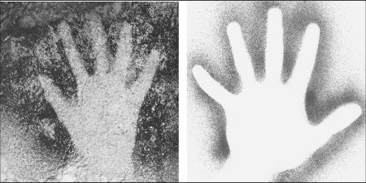

Relationships between categorical variables
Although it may not have always been obvious, with the exception of the one-sample t-test all of the procedures we have studied so far have been designed to study relationships between two variables. To summarize:
| Analysis | Predictor | Response | Example |
|---|---|---|---|
| Regression | Numeric | Numeric | Number of correct characters as a function of distance to the board |
| ANOVA | Categorical | Numeric | Sizes of cuckoo eggs as a function of host species |
| Two-sample t-test | Categorical | Numeric | Survival duration as a function of lung cancer cell type |
| Contingency tables | Categorical | Categorical | Relationship between handedness and time period |
In each case the null hypothesis tells us what to expect if there is no relationship between the predictor and the response variables - we express this as a hypothesis of slope = 0 for regression, and as equal means across the categories of the grouping variable for ANOVA and t-tests. The same basic approach applies to the case in which both variables are categorical, but we will be using a method called contingency table analysis to assess these relationships.
Example - handedness through the ages
You've probably seen pictures of hand prints on cave walls made by prehistoric artists, like the one on the left side of this image. Cave paintings of these kinds are found in a variety of places, including Australia, South America, and Indonesia, and hand prints from these areas date from the Neolithic (approximately 8500 BC) to modern times. Hand prints found in western European caves are even older, dating to the upper Paleolithic (about 10,000 BC).
The cave prints are negative images, in that the pigment surrounds the hand, and the space covered by the hand itself is blank. They are made by placing the palm of one hand on the cave wall and then blowing pigment through a straw to trace the hand onto the surface surrounding it. The position of the thumb makes it clear whether the print is of a right or left hand.
Two researchers (C. Faurie and M. Raymond, Biology Letters, 2003, 271:S43-S45) were interested in using the hand prints to assess whether handedness rates have changed between the Paleolithic period and modern times. They compiled data on hand prints in cave walls from France and Spain that dated to the Paleolithic period, and out of 343 hand prints they found 264 left hands, and 79 right hands. They then wanted to compare the frequencies from that single sample to handedness rates in modern people. How might they proceed?
|
We know how to use a Chi-square goodness of fit analysis to compare observed frequencies to expected frequencies. We know that in modern times left handedness is approximately 10% of the population globally, which means that right handedness is 90% (we'll ignore the ambidextrous to keep things simple). When people make a hand print with this method, they usually holds the straw with their dominant hand and put their non-dominant hand on the cave wall to serve as the template. So, if we put 10% of the 343 total hand prints into the Expected column for right hands (which are made by left-handed people), and the other 90% into the Expected column for left hands (made by right-handed people), we have what we need to do a goodness of fit test. |
|
We could then calculate the Chi-square test statistic as:
χ2 = (79-34.3)2/34.4 + (264-308.7)2/264 = 64.7
The area under the curve from 64.7 to infinity for a Chi-square distribution with 2-1 = 1 degrees of freedom is tiny, p = 8.6 x 10-16. With a p-value this small we can confidently reject the null hypothesis that observed handedness rates from the Paleolithic are the same as rates from modern times.
But, there is a problem with this approach.
The 90% right, 10% left handed numbers are generalizations that are based on which hand people use for common tasks like writing. However, it turns out that handedness depends on the task. It is not uncommon for people who write with their left hands to do other tasks right-handed (and vice versa for right-handed people), so the rates for writing may not be reliable indicators of rates for other tasks. Given this, it's important to assess handedness rates for a particular task, and general numbers may not predict the handedness rate for something like making negative hand prints on cave walls. Unsurprisingly, there are no generally accepted rates from modern human populations for this task.
Contingency table tests of association
To solve the problem of not knowing the expected rates for modern hand prints, Faurie and Raymond generated their own data for modern populations. They gave 179 university students paper, pigment, and straws and asked them to make a negative hand print, but let the students choose for themselves which hand to use to hold the straw and which to use for the negative impression. They then counted the number of right and left hand prints the students made.
| Period | |||
|---|---|---|---|
| Print type | Paleolithic | Modern | Row total |
| Right | 79 | 41 | 120 |
| Left | 264 | 138 | 402 |
| Column total | 343 | 179 | 522 |
The data on negative hands for either Paleolithic or present-day are presented here. This kind of table is called a contingency table. It is used to summarize cases in which we have a set of observations (hand prints) that are measured on two different categorical variables. The first categorical variable is the Period, and we have two different possible levels - Paleolithic or Modern. The second categorical variable is Print type, and we have two levels for that variable as well - Right or Left.
Everywhere a Period level intersects with a Print type level we have a cell in the table, which holds the number of hands that were counted with that combination. For example, the combination Paleolithic/Right occurred 79 times, and Modern/Right occurred 41 times.
The row and column totals are marginal totals, which give the total number of prints for the row or column they occupy - there were a total of 120 Right hands from both periods, and there were 179 Modern hand prints of both print types.
| Period | ||
|---|---|---|
| Print type | Paleolithic | Modern |
| Right | 0.230 | 0.229 |
| Left | 0.770 | 0.771 |
| Column total | 1 | 1 |
What we want to know is whether the distribution of right and left hand prints is different between the two periods. We can't just compare directly, because there are different numbers of prints in samples from each period (343 total for Paleolithic, 179 for Modern), but even if we express the numbers as relative frequencies like the table to the right, the proportions of each period's prints that are right or left are very similar, but not identical. We want to know if the distribution of print types depends on the period.
And how do we test for dependencies between variables? We come up with a null hypothesis of a lack of dependency and test that. Another way of saying "lack of dependence" is independence. The null hypothesis for our analysis is that print types are independent of period. When we are working with two variables that are sampled at random, and we are looking for dependency between them, the test is called a Chi-square contingency table test of association.
We will need to compare the observed frequencies of right and left hands for each period against a set of expected frequencies to test this null hypothesis, so just like with goodness of fit testing our null hypothesis can be expressed as:
Ho: Observed frequency = Expected frequency
Think for a moment about how using a second sample of data from Modern times instead of known rates changes the analysis. When the information we have about modern handedness rates comes from a sample of data instead of known rates we can no longer use a Chi-square goodness of fit test. We need a different method of coming up with expected frequencies to compare with the observed frequencies in all four of the cells.
By the way, before we move on to the new method for analyzing contingency tables, what about that Modern sample? How could we know if handedness for making hand prints is the same as the 90% R, 10% L rate mentioned above? Click here to see if you're right.
Expected values
Table 1: Raw data for coin
flipping experiment
| COIN 1 | COIN 2 |
|---|---|
| Heads | Heads |
| Tails | Heads |
| Heads | Tails |
| Tails | Tails |
| ... | ... |
| Heads | Heads |
To understand where the expected values come from in a contingency table analysis, let's start with a simple example. Imagine that we are tossing two coins at the same time, and observing how often they land with each of the possible combinations of heads and tails - heads, heads; heads, tails; tails, heads; tails, tails. The data that we would collect would look like Table 1.
The question is, does the distribution of heads or tails we observe for Coin 1 depend on the distribution of heads or tails we observe for Coin 2?
Given what we know about coin tossing we can be pretty sure that the
coins are independent - a heads on one coin doesn't make it more or
less likely you'll get a heads on the other. If this is the case, then
roughly 50% of the heads flipped for Coin 1 will be accompanied by
heads on Coin 2, and the other 50% will be accompanied by tails on
Coin 2.
Table 2: Contingency table
of outcomes for Coin 1 and Coin 2
| Coin 1 | |||
|---|---|---|---|
| Coin 2 | Heads | Tails | Total |
| Heads | 25 | 25 | 50 |
| Tails | 25 | 25 | 50 |
| Total | 50 | 50 | 100 |
Once we have flipped our pair of coins many times (say, 100 times - the ellipses in Table 1 represent the other 95 tosses) we could summarize the data into a contingency table, like in Table 2.
Because this is an illustration rather than an actual experimental result, the numbers in the table were selected to match our expectation exactly. The marginal column totals for Coin 1 show that out of 100 total flips we got exactly 50 heads and 50 tails, and the marginal row totals show the same result for Coin 2. Furthermore, since we don't expect that flipping one coin is going to have any effect on the outcome for another, half of the time when we flip a Heads on Coin 1 we should flip a Heads on Coin 2, and half of the time we should flip a Tails on Coin 2 - consequently, in the body of the table in which each combination of outcomes for Coin 1 and Coin 2 are shown, all of the counts are equal to 25.
Table 3: Marginal probabilities.
| Coin 1 | |||
|---|---|---|---|
| Coin 2 | Heads | Tails | Total |
| Heads | 0.5 x 0.5 = 0.25 |
0.5 x 0.5 = 0.25 |
0.50 |
| Tails | 0.5 x 0.5 = 0.25 |
0.5 x 0.5 = 0.25 |
0.50 |
| Total | 0.50 | 0.50 | 1.00 |
We can convert the marginal totals into marginal probabilities by by dividing marginal total by the total number of flips, which was 100. The marginal probabilities are in Table 3, in the row and column margins, in boldface.
If you recall from the first couple of weeks of class, we can calculate the "and" probabilities for the combinations of Coin 1 and Coin 2 outcomes in the body of the table using these marginal probabilities. For example, the probability of flipping a Heads on Coin 1 is 0.5, and half of those will be accompanied by a Heads for Coin 2, such that the probability of a Heads on both coins is 0.5×0.5 = 0.25.
At least, this method of calculating joint probabilities works only if the two variables are independent.
Table 4: Expected frequencies
| Coin 1 | |||
|---|---|---|---|
| Coin 2 | Heads | Tails | Total |
| Heads | 0.25 x 100 = 25 |
0.5 x 0.5 = 0.25 |
50 |
| Tails | 0.25 x 100 = 25 |
0.5 x 0.5 = 0.25 |
50 |
| Total | 50 | 50 | 100 |
We can now convert the joint probabilities in the cells from Table 3 into expected frequencies in Table 4 - simply multiply the joint probabilities by the total number of coin tosses (100) to get the expected number of times the each combination will occur, if the null hypothesis of independence between Coin 1 and Coin 2 is true.
Thus, we have expected frequencies derived from the data in the table, without reference to some known sets of proportions.
Note that a shortcut to this set of calculations is to recognize that we we are calculating (50/100) x (50/100) x 100, which is equal to (50 x 50)/100 - this is row total multiplied by column total divided by grand total, (rc)/t.
Contingency table
Cells are "Observed freq. (Expected freq.)"
Expected is (row total)(column total)/(grand total)
Chi-square = , p =
Enter number of tosses:
Table 4 is a little too perfect to illustrate reality, though, in that every row and column total perfectly matches the outcome we expect from tossing coins. Marginal totals will usually not be so perfect. Having marginal totals that are different doesn't change the calculations at all, but it does mean that expected frequencies will not all be the same in most contingency tables.
The graph to the left shows how this approach to generating expected frequencies works when coins are actually tossed. We may expect 50 heads and 50 tails with 100 tosses, but random chance produces numbers different than this. The heights of the red and blue bars show the outcome of tossing two coins the number of times specified (100 initially), and the black dots are the expected frequencies based on the marginal totals.
The expected frequencies are based on the null hypothesis of independence between the two coins. Just like with all of the analyses we're learned, the null hypothesis is expressed as an exact expected outcome at a population level, but random sampling gives us data that doesn't perfectly match the expected outcome, even when the null hypothesis is true. You will see that even though Coin 1 and Coin 2 frequencies are generated independently, the observed numbers are usually at least a little different from expected values.
The observed values change at random because they represent the data, which is subject to random variation. The expected values are generated from the observed data, and since the marginal totals are changing the expected values will change as well. Pay attention to the relative difference between the two expected values for the sets of two bars - the relative difference between the red and blue bars will be the same for Heads on Coin 2 and Tails on Coin 2 each time you get a new outcome.
About once every 20 tosses the difference between observed and expected is large enough to get a p-value less than 0.05, as we expect when the null hypothesis is true.
Test statistic, p-value
At this point we are ready to make a comparison between the observed number of combinations of Coin 1 and Coin 2 outcomes (Table 2) and the expected frequencies in Table 4.
We use the same Chi-square test statistic value for this analysis - it is the sum of squared differences between observed and expected divided by expected, across all of the cells in the table. Since the observed perfectly matches the expected in this first example, the calculation is:
χ2 = (25-25)2/25 + (25-25)2/25 + (25-25)2/25 + (25-25)2/25 = 0
The degrees of freedom for the test is equal to the number of rows - 1 multiplied by the number of columns - 1:
d.f. = (r-1)(c-1) = (2-1)(2-1) = 1
Since the entire curve falls above a Chi-square value of 0, the p-value is p = 1.
Non-independent coins
Table 5: A very
non-independent pair of coins.
| Coin 1 | |||
|---|---|---|---|
| Coin 2 | Heads | Tails | Total |
| Heads | 50 | 0 | 50 |
| Tails | 0 | 50 | 50 |
| Total | 50 | 50 | 100 |
At this point we've seen how independent variables look, but what about variables that are not independent?
A simple way of illustrating dependence between two coins is to attach them to a piece of tape so that when we flip them they must always both land the same side up. The table would look like Table 5.
You can see that the marginal totals are all exactly the same as Table 2 above, so taping the coins together hasn't changed the marginal probabilities at all - there is still a p of 0.5 that either side will land up for each coin. But, taping them together now prevents mixes of heads and tails from occurring, which changes the combinations of heads and tails observed in the table cells. Now, instead of having 25 of each combination (as we expect for independent coins) we now have 50 Heads/Heads and 50 Tails/Tails, and none in the other combinations. The difference between what we observed and what we expect if the coins are independent will be the basis for deciding whether the coins show a significant lack of independence.
Since the marginal totals haven't changed the expected frequencies are exactly the same as in Table 4 - thus, (rc)/t is still (50x50)/100 = 25 for every cell.
The Chi-square test would look like this:
χ2 = (25-50)2/25 + (25-0)2/25 + (25-50)2/25 + (25-0)2/25 = 100
With (2-1)(2-1) = 1 degrees of freedom the p-value is p = 1.5 x 10-23. Thus, observed does not equal expected, and the outcome on Coin 1 depends on the outcome on Coin 2.
Chi-square test of association for handedness through the ages
Now that we know what independent variables and dependent variables look like, let's return now to our data on handedness. We have a contingency table of right and left handed prints from Paleolithic and Modern samples. We want to know if the print type depends on period.
Observed frequencies - data
| Period | |||
|---|---|---|---|
| Print type | Paleolithic | Modern | Row total |
| Right | 79 | 41 | 120 |
| Left | 264 | 138 | 402 |
| Column total | 343 | 179 | 522 |
Expected frequencies - (rc)/t
| Period | |||
|---|---|---|---|
| Print type | Paleolithic | Modern | Row total |
| Right | 78.9 | 41.1 | 120 |
| Left | 264.1 | 137.9 | 402 |
| Column total | 343 | 179 | 522 |
The sum of [(O-E)2/E] is our observed Chi-square, which is:
χ2 = 0.00008+0.00028+0.00016+0.00054 = 0.00106
The p-value, with df = (2-1)(2-1) = 1 is p = 0.974. Based on this analysis we retain the null - handedness is independent of period, and the rate of left and right handed prints is the same between the periods.
Example: pregnancy testing
Pregnancy tests that are available over the counter measure the amount of a hormone, called "human chorionic gonadotropin" or hCG, that is produced by the placenta during pregnancy. Over the counter tests are urine tests, and since the amount of hCG in urine varies substantially between pregnant women, and also increases in amount as the placenta grows in size over time, they are a useful early indicator of pregnancy. However, urine tests are less accurate than the blood tests done by physicians, and some amount of error is expected in these urine tests. Tests are "positive" if hCG is detected in any amount, and "negative" if it is not. If we were to test the accuracy of home pregnancy test, we could have physicians identify women as either being pregnant or not based on a blood test, and then give our home pregnancy test to equal numbers of women in each pregnancy status group (pregnant or not). The data might look something like this:
| Pregnancy status | |||
|---|---|---|---|
| HPT result | Pregnant | Not pregnant | Total |
| Positive | 95 | 50 | 145 |
| Negative | 5 | 50 | 55 |
| Total | 100 | 100 | 200 |
The first question we would want to answer is, "Is there an association between the results of the HPT and the pregnancy status of the patient?". If the home pregnancy test is working well, there should be an association, and specifically, we should see combinations that indicate agreement between the HPT results and the actual pregnancy status of women occurring more often than expected.
Because we used an equal number of pregnant and non-pregnant women, this is called a test of heterogeneity. If instead of experimentally setting the number of women in each group we had simply randomly sampled women from the population and observed their pregnancy status, we would be conducting a test of association, like the hand print data.
First, we need expected numbers:
| Pregnancy status | |||
|---|---|---|---|
| HPT result | Pregnant | Not pregnant | Total |
| Positive | 145×100/200 = 72.5 | 145×100/200 = 72.5 | 145 |
| Negative | 55×100/200 = 27.5 | 55×100/200 = 27.5 | 55 |
| Total | 100 | 100 | 200 |
Next, we need an observed Chi-square value:
| Pregnancy status | ||
|---|---|---|
| HPT result | Pregnant | Not preg. |
| Positive | (95-72.5)2/72.5 = 6.98 | (50-72.5)2/72.5 = 6.98 |
| Negative | (5-27.5)2/27.5 = 18.41 | (50-27.5)2/27.5 = 18.41 |
χ2 = 6.98 + 6.98 + 18.41 + 18.41 = 50.78
Finally, we need a probability for this observed Chi-square value. The probability of this Chi-square value with (2-1)(2-1) = 1 df is p < 0.001 - clearly, there is an association between the HPT results and the actual pregnancy status of women.
Interpreting a significant Chi-square contingency table
Just as we needed to follow up a significant ANOVA with a Tukey's procedure to find out which means were different, we have not yet identified which cells in the table are responsible for the significant Chi-square test. The next question we would like to answer is, which combinations of pregnancy status and HPT results are different from what we would expect by chance? We can address this question by calculating the "standardized residual" for each cell, which is simply (Observed - Expected)/sqrt(Expected).
| Pregnancy status | ||
|---|---|---|
| HPT result | Pregnant | Not preg. |
| Positive | (95-72.5)/8.51 = 2.64 | (50-72.5)/8.51 = -2.64 |
| Negative | (5-27.5)/5.24 = -4.29 | (50-27.5)/5.24 = 4.29 |
Standardized residuals are approximately normally distributed, and so absolute values greater than 2 indicate a significant deviation from expected. Positive standardized residuals greater than 2 are significantly greater than expected, and negative standardized residuals less than -2 are significantly lower than expected. You can see that pregnant women had positive HPT tests significantly more often than expected, and women that were not pregnant had negative HPT results significantly more often than expected - this is good, because both outcomes are consistent with an effective home pregnancy test. Because this was a test of heterogeneity the standardized residuals have equal magnitudes within the rows. With a test of association the standardized residuals can be different in every cell, and there could be only a single cell that's different from expected.
Assumptions of Chi-square contingency tables
Although the expected frequencies are obtained in a different way than Chi-square goodness of fit testing, we still use a Pearson's Chi-square test statistic. The assumptions are thus the same - independent observations, random sampling, and adequate sample size (no expected frequencies less than 1, no more than 20% less than 5).
Next activity
For this week's lab we will be analyzing data from the sinking of the Titanic. We will test whether there is an association between whether passengers survived or not, based on their sex, age, and class.